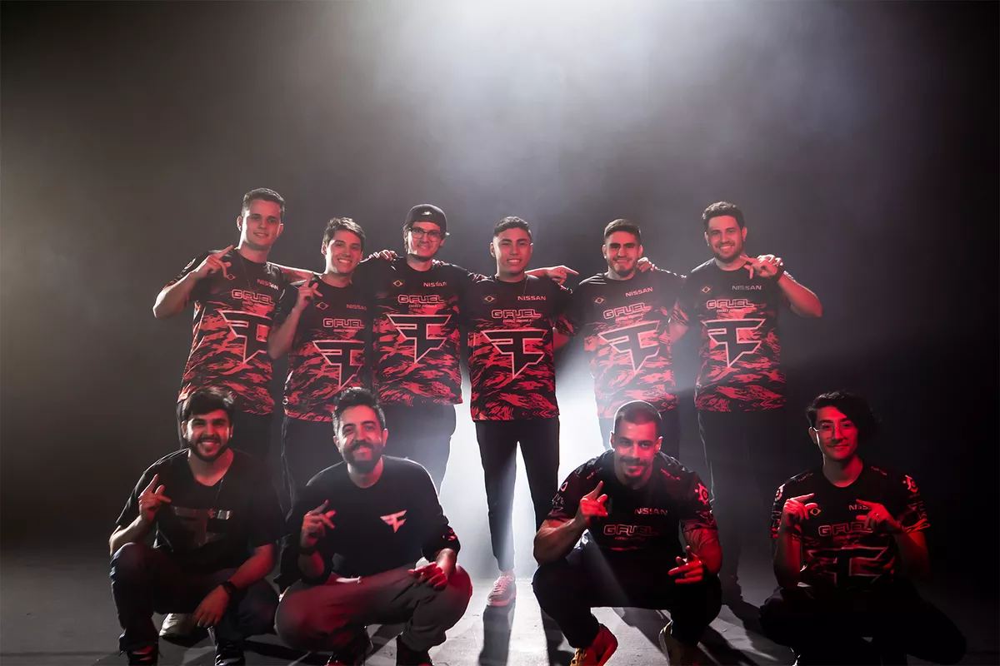
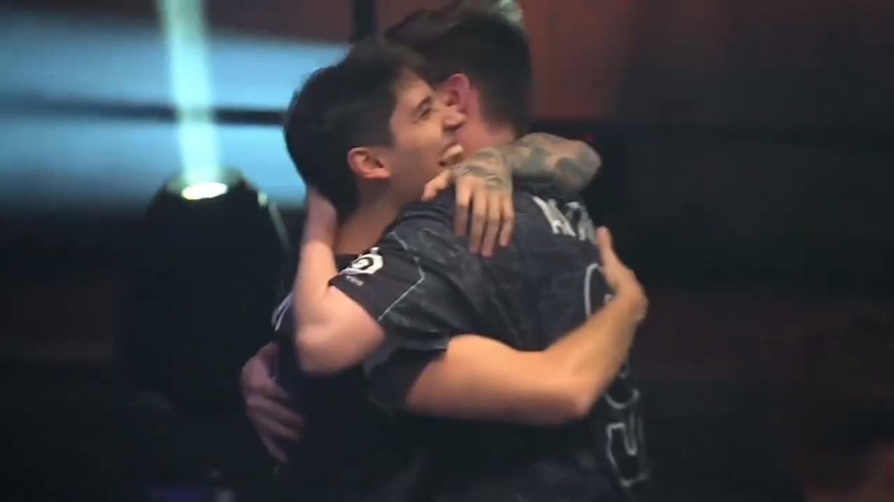
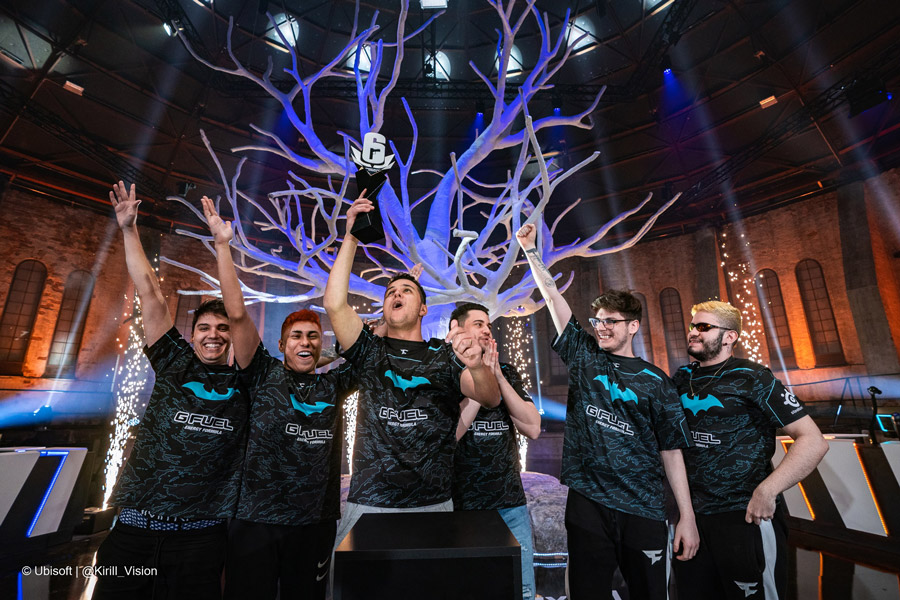

Introdução
Leonardo Luis Buzzachera, ou como é conhecido, Astro, é um jogador profissional do FPS (first person shooter) tático Rainbow Six Siege, atualmente joga pelo time da FaZe Clan, em que permanece desde dezembro 2017. Teve grande destaque na posição de entry fragger, além de utilizar com maestria a operado francesa "Twitch". Além do time da FaZe, Astro atuou por outros dois times. Seu primeiro time foi o Santos Dexterity, onde jogou com gohaN, mav, cameram4n e HSnamuringa. Sairam da Santo em 2017, no meio da atual temporada, após descumprimento de contrato por parte do time. Então a line foi comprada pela Team Fontt, onde permaneceram até o final da temporada, até serem comprados pela FaZe Clan.
"Um novo começo..."
Em 2020 a FaZe Clan mudou sua line para a próxima temporada. A até então line-up - Astro, Yoona, ion, live, KDS - foi substituida por parte da line da Mibr, a atual campeã do Brasileirão, sendo eles cameram4n, Soulz, Cyber e Bullet1. Da antiga FaZe permaneceu somente Astro, e mais uma vez estava junto do seu amigo cameram4n.
Mesmo a nova line tendo bons resultados no Brasileirão 2021, tendo terminado em primeiro lugar no primeiro turno e segundo lugar no segundo turno, não conseguiram resultados positivos nas outra competições, amargando quinto lugar na Copa Elite Six 2021 - Stage 1 e no Six Invitational 2021, e sétimo lugar na Copa Elite Six - Stage 2.
Porém, depois, as coisas entraram nos trilhos. No Brasileirão, a equipe da FaZe Clan fez um terceiro turno espetacular e bateram o recorde de vitórias consecutivas, conquistando 7 vitórias em sequência. Até então o recorde pertencia a equipe da Black Dragons, que conquistaram 6 vitórias em sequência no ano de 2018. Terminando na segunda posição, eles haviam se classificado para a Copa Elite Six 2021 - Stage 3. Embalados por uma excelente campanha no campeonato brasileiro, a equipe novamente se mostrou superior. Na fase de grupo ganhou 3 partidas das 4 que disputou, classificando em segundo lugar do Grupo B, nos playoffs passou tranquilamente pelas quartas e semi final, fez a final com o time da Team oNe e ganhou de 2x1, se sagrando campeões.
Após a conquista da Elite Six, eles se classificaram para o campeonato mundial, Six Major, que aconteceu na Suécia. Na fase de grupo, a FaZe Clan era o time a ser batido. Conquistaram 5 vitórias das 6 disputadas, todas com placares elásticos. Nos playoffs, as coisas não foram tão faceis assim. Garantiram o segundo mapa contra a BDS no OT, tiveram uma partida disputadíssima contra a DAMWON Gaming, em que foi para o último round do último mapa, e com um clutch lindo do Soulz, conseguiram a vaga para a final. A Grande Final, uma partida MD5 entre FaZe e NiP (Ninjas in Pyjamas). A FaZe abriu a disputa garantindo o mapa Litoral, escolha dos Ninjas. Porém, os Ninjas reagiram e garantiram dois mapas - Villa e Chalé - em sequência. Era a vez do Banco, e a FaZe mostrou por que é considerado o seu melhor mapa. Tudo empatado (2x2), não tinha mais pra onde correr, o palco da decisão seria em um café elegante de Moscou, estamos falando do Café Dostoyevsky. A NiP abriu o placar, mas não conseguiu segurar o ritmo frenético e implacável da FaZe. Vitória e título da FaZe Clan na Suécia.
Foi uma grande conquista para toda equipe, mas com certeza tinha um gostinho especial para o Astro e cameram4n. Amigos de longa data e companheiros de equipe, ambos já haviam batalhado muito por um título mundial, e finalmente esse dia havia chegado.
 Conquistas
Principais conquistas de Astro durante sua carreira:
- 2° lugar Six Berlin Major 2022
- 1° lugar Copa Elite Six - Season 2022: Stage 2
- 3° lugar Six Invitational 2022
- 1° lugar Six Sweden Major 2021
- 1° lugar Copa Elite Six - Season 2021: Stage 3
- 2° lugar Six August 2020 Major - Brazil
- 2° lugar Brasileirão 2019
- 2° lugar Pro League Season 8 - Finals
- 1° lugar OGA PIT Season 2
- 1° lugar Brasileirão 2018
- 1° lugar Brasileirão 2017 - Season 2
- 1° lugar Elite Six 2016